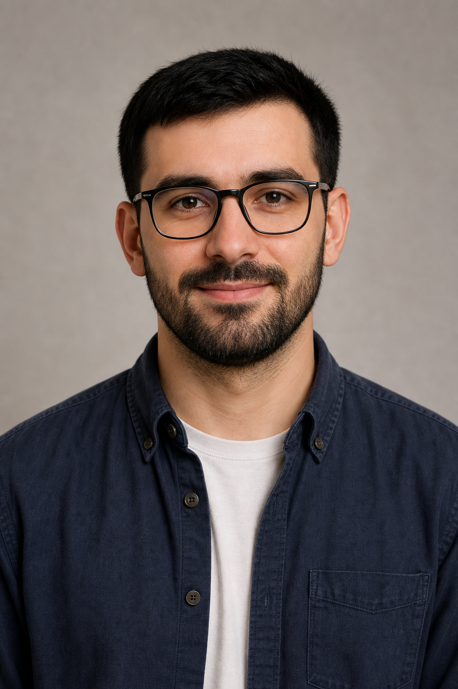

03
Aceasta este familia mea
Oameni, familia și descrierea scurtă · Lecție A1 pentru adulți
Obiectivele lecției
- Prezint membrii familiei și spun relația dintre persoane
- Spun vârsta și descriu pe scurt aspectul fizic
- Folosesc „a avea”, „meu/mea” și acordul simplu al adjectivului
- Înțeleg și formulez întrebări simple despre o persoană
👪 Membrii familiei
👩mamă / mama meaMutter / meine Mutter
👨tată / tatăl meuVater / mein Vater
👧soră / sora meaSchwester / meine Schwester
👦frate / fratele meuBruder / mein Bruder
👵bunică / bunica meaGroßmutter / meine Großmutter
👴bunic / bunicul meuGroßvater / mein Großvater
👩mătușă / mătușa meaTante / meine Tante
👨unchi / unchiul meuOnkel / mein Onkel
👧fiică / fiica meaTochter / meine Tochter
👦fiu / fiul meuSohn / mein Sohn
💍soție / soția meaEhefrau / meine Ehefrau
💍soț / soțul meuEhemann / mein Ehemann
🤝parteneră / partenera meaPartnerin / meine Partnerin
🤝partener / partenerul meuPartner / mein Partner
👧nepoată / nepoata meaEnkelin / meine Enkelin
👦nepot / nepotul meuEnkel / mein Enkel
👩noră / nora meaSchwiegertochter / meine Schwiegertochter
👨ginere / ginerele meuSchwiegersohn / mein Schwiegersohn
🧍 Corpul și fața
Pentru descriere folosim de obicei forma articulată: capul, nasul, gura, urechile, ochii, părul.
👤capulder Kopf
👃nasuldie Nase
👄gurader Mund
👂urechiledie Ohren
👀ochiidie Augen
💇păruldie Haare
🙂fațadas Gesicht
🦷dințiidie Zähne
👁️ Cum descriem fața?
🔵ochii albaștriblaue Augen
🟢ochii verzigrüne Augen
🟤ochii căpruibraune Augen
👀ochii mari / micigroße / kleine Augen
👄gura mare / micăgroßer / kleiner Mund
🔴gura roșieroter Mund
👂urechile mari / micigroße / kleine Ohren
🔴urechile roșiirote Ohren
👃nasul mare / micgroße / kleine Nase
🙂fața rotundă / ovalărundes / ovales Gesicht
💇 Cum descriem părul?
↕️părul lunglange Haare
↔️părul scurtkurze Haare
➖părul mediumittellange Haare
🦱părul creț / dreptlockige / glatte Haare
🟡părul blondblonde Haare
⚫părul brunetdunkle Haare
🟤părul șatenbraune Haare
🟠părul roșcatrote Haare
⚪părul alb / căruntweiße / graue Haare
🚫chel / fără părkahl / ohne Haare
📚 Cum este persoana?
📏înalt / înaltăgroß
📐scund / scundăklein
🧍slab / slabăschlank
⭕gras / grasădick
🧒tânăr / tânărăjung
👴bătrân / bătrânăalt
😊vesel / veselăfröhlich
😐serios / serioasăernst
🦱păr crețlockige Haare
👱păr blondblonde Haare
🕶️ochelariBrille
👁️ochi căpruibraune Augen
↕️păr lunglange Haare
↔️păr scurtkurze Haare
➖păr dreptglatte Haare
🟤păr șatenbraune Haare
⚫păr negruschwarze Haare
⚪păr albweiße Haare
🟢ochi verzigrüne Augen
🔵ochi albaștriblaue Augen
🥸barbă / mustațăBart / Schnurrbart
👓poartă ochelariträgt eine Brille
↔️ Antonime
înalt ↔ scundgroß ↔ klein
tânăr ↔ bătrânjung ↔ alt
slab ↔ grasschlank ↔ dick
păr lung ↔ păr scurtlange Haare ↔ kurze Haare
păr drept ↔ păr crețglatte Haare ↔ lockige Haare
vesel ↔ tristfröhlich ↔ traurig
ochii mari ↔ ochii micigroße Augen ↔ kleine Augen
gura mare ↔ gura micăgroßer Mund ↔ kleiner Mund
urechile mari ↔ urechile micigroße Ohren ↔ kleine Ohren
nasul mare ↔ nasul micgroße Nase ↔ kleine Nase
🧩 Gramatică simplă
El este înalt. Ea este înaltă.
Er ist groß. Sie ist groß.
El are părul scurt. Ea are părul lung.
Er hat kurze Haare. Sie hat lange Haare.
El poartă ochelari.
Er trägt eine Brille.
Observă: După „este”, adjectivul se acordă: înalt – înaltă, scund – scundă. Pentru păr și ochi folosim verbul a avea: are părul…, are ochii….
💡 Model simplu
El este înalt și slab.
Er ist groß und schlank.
Ea este scundă și veselă.
Sie ist klein und fröhlich.
El are părul scurt.
Er hat kurze Haare.
Ea are ochii albaștri.
Sie hat blaue Augen.
💬 Dialoguri despre familie
Despre soție
– Cum arată soția ta?
– Soția mea este înaltă și are părul blond.
Despre fiu
– Câți ani are fiul tău?
– Fiul meu are treizeci de ani. Are părul scurt și negru.
Despre soră
– Sora ta poartă ochelari?
– Da, sora mea poartă ochelari.
Despre nepoată
– Cum este nepoata ta?
– Nepoata mea este tânără și veselă. Are ochii verzi.
📷 Familia lui Andrei
Andrei este adult. Privește fotografiile familiei lui și alege descrierea potrivită.

1. Maria, soția lui Andrei

2. Mihai, fiul lui Andrei

3. Irina, fiica lui Andrei

4. Paul, tatăl lui Andrei
🎮 Exerciții interactive
1. Descrie fața și părul
Maria are ochii verzi. Care propoziție este corectă?
Paul are părul alb și scurt. Alege descrierea corectă.
Cum descriem o persoană cu o gură de dimensiune redusă?
2. Potrivește antonimele feței și ale părului
Selectează o expresie din stânga și antonimul ei din dreapta.
ochii mari
gura mică
urechile mari
nasul mic
părul lung
părul drept
părul scurt
urechile mici
ochii mici
părul creț
nasul mare
gura mare
3. Potrivește relațiile de familie
soția mea
fiul meu
nepoata mea
fratele meu
ginerele meu
meine Enkelin
mein Schwiegersohn
meine Ehefrau
mein Bruder
mein Sohn
4. Recunoaște adjectivul
Care este contrariul lui „înalt”?
Cum spui „schlank” în română?
5. Potrivește română–germană
înalt
scund
slab
vesel
bătrân
schlank
alt
groß
fröhlich
klein
6. Găsește antonimele
Apasă pe un cuvânt din stânga, apoi pe antonimul lui din dreapta.
înalt
tânăr
slab
păr lung
păr drept
păr creț
bătrân
păr scurt
scund
gras
7. Tradu în română
8. Construiește propoziția
Meine Ehefrau ist groß und schlank.
9. Construiește o întrebare
Wie sieht dein Enkel aus?
10. Alege acordul corect
Soția mea este...
Nepotul meu este...
11. Vorbește despre familia ta
Alege numai întrebările potrivite pentru situația ta. Poți spune și: „Nu sunt căsătorit/ă.”, „Nu am copii.” sau „Nu am nepoți.”
Ai soț, soție sau partener? Cum arată?
Model: Soțul meu este înalt. Are părul scurt și poartă ochelari.
Ai copii? Cum arată fiul sau fiica ta?
Model: Fiica mea are treizeci de ani. Este înaltă și are părul creț.
Ai nepoți? Cum sunt nepotul sau nepoata ta?
Model: Nepoata mea este tânără și veselă. Are ochii căprui.
Ai frați sau surori? Prezintă o persoană.
Spune 3–4 propoziții folosind „este”, „are”, „poartă”, „meu” sau „mea”.
Acum poți prezenta familia ta.Poți numi membrii familiei și poți descrie simplu aspectul unei persoane.